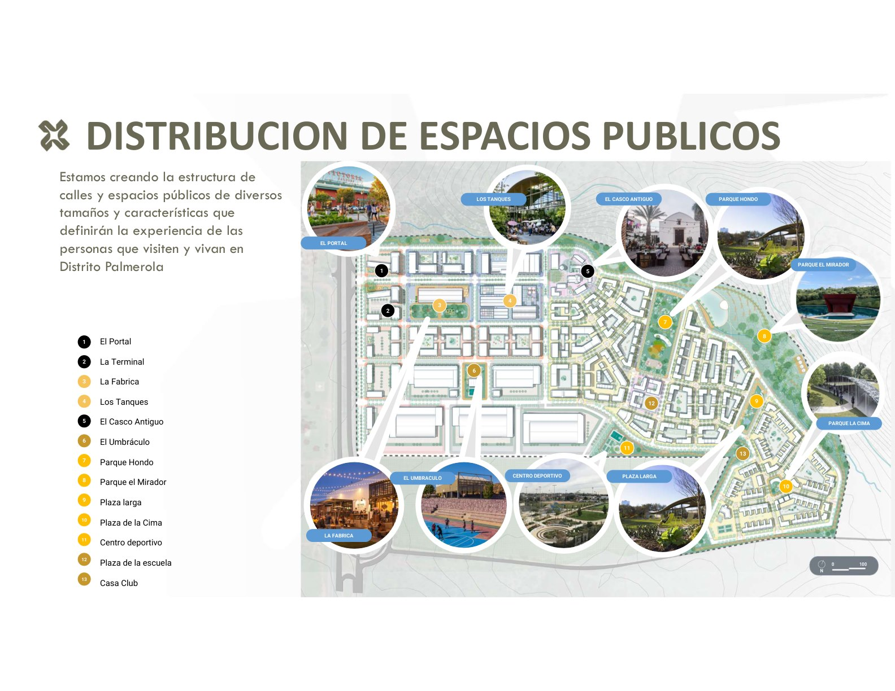
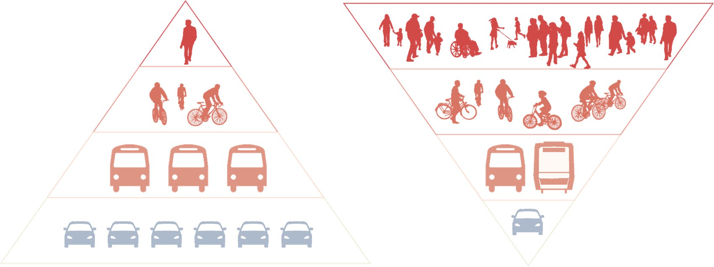
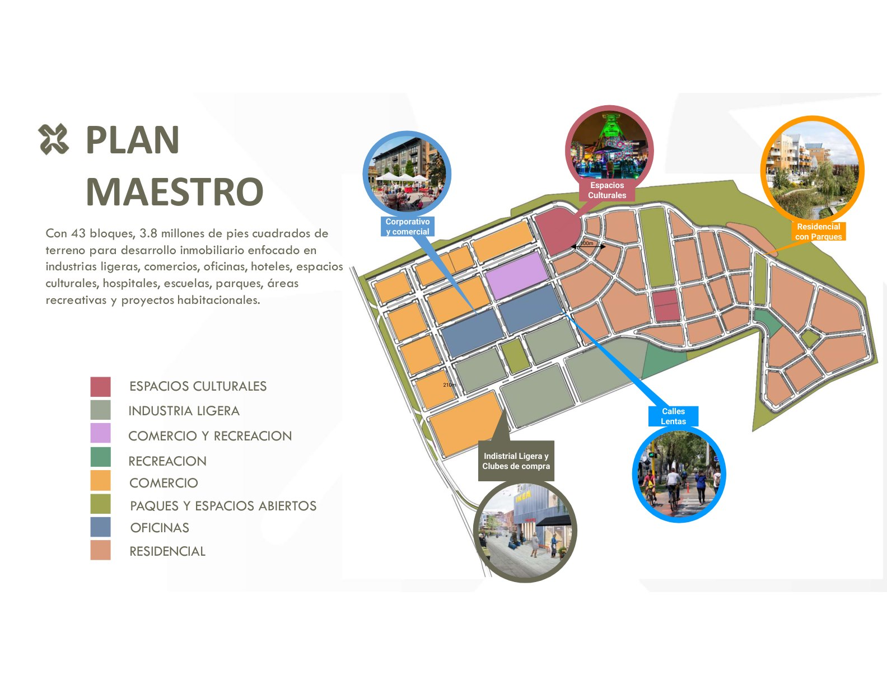
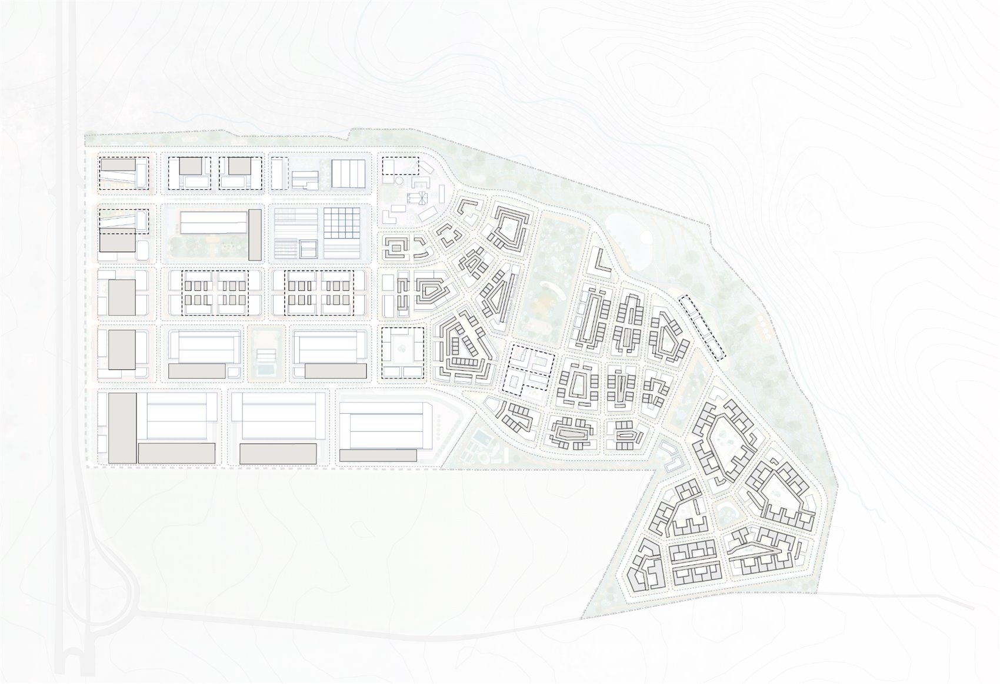

Inicio / Plan Maestro
Una ciudad planificada para las personas.
Un plan maestro a 20 años diseñado por GEHL y Castillo Arquitectos, con usos mixtos, movilidad a escala humana y espacios públicos en el corazón del distrito.
El plan a 20 años
La escala de una nueva ciudad.
Con 43 manzanas y 3.8 millones de pies cuadrados de terreno para desarrollo, el plan integra industria ligera, comercio, oficinas, hoteles, espacios culturales, salud, escuelas, parques, áreas recreativas y vivienda.

Mezcla de usos

Estructura urbana
43 manzanas, 8 parcelas, una ciudad completa.
El plan incluye parcelas para vivienda, comercio, oficinas, industria y usos cívicos, religiosos y médicos. La mayoría de parques y plazas se ubican dentro de estas parcelas, con el Parque El Mirador en su propia parcela designada.
Las alturas van de 1 a más de 7 niveles, según ubicación y uso, para lograr una ciudad diversa y a escala humana.
Espacios públicos
Lugares con nombre propio.
Calles y espacios de diversos tamaños y caracteres que definirán la experiencia de quienes visiten y vivan en Distrito Palmerola.

El Portal
La plaza de entrada al distrito: un gran espacio público acogedor, amplio, flexible y abierto, rodeado de usos que invitan a quedarse y explorar.
Los Tanques
Los antiguos tanques industriales se transforman para albergar comercio, fomentando la exploración y una experiencia de compra única.
La Fábrica
La atracción comercial y cultural principal: revive el patrimonio industrial del sitio como sede de exhibiciones, comercio y hospitalidad.
El Casco Antiguo
El conjunto de la iglesia y edificios religiosos, rodeado de jardines y plazas; su atrio es el corazón de la vida pública y las celebraciones.
El Umbráculo
Plaza semicubierta para deporte, recreación y descanso: área sombreada para food trucks, canchas y un salón para ferias de producto local.
El Parque Hondo
Parque urbano en el área residencial más densa: juegos infantiles, splash pads, pequeños lagos, pabellón comunitario y áreas de picnic.
La Plaza Larga
Conecta las áreas residenciales creando una zona de encuentro; un espacio de descanso y recreación para todas las edades al aire libre.
El Parque de la Cima
Un parque en la parte alta con las mejores vistas de los llanos y montañas, con pabellón central y coberturas artísticas que cambian con las estaciones.
Centro Deportivo
Canchas de tenis, fútbol 11 y 5, diamante de béisbol y una pista de atletismo conectada al circuito de espacios públicos del distrito.
Parque El Mirador
El mayor espacio verde del distrito, que lo conecta a pie y en bici: senderos, gimnasio al aire libre, área para mascotas, food stands y anfiteatro.
Visión de movilidad
Primero las personas, después los autos.
La estrategia busca un cambio modal: pasar de un entorno dominado por el tráfico a un vecindario transitable que prioriza a peatones, ciclistas y transporte público, en ese orden.
Peatón primero
Calles lentas, cruces seguros y una experiencia agradable para caminar por todo el distrito.
Ciclovías
Movilidad activa e inclusiva que conecta parques, plazas y usos cotidianos.
Transporte público
Integrado y organizado, conectado con los demás modos de transporte.

Datos del plan
La ciudad, en números.
Población proyectada
Personas que vivirán y trabajarán en el distrito.
| Vivienda unifamiliar 4 personas por vivienda | 750 |
| Apartamentos 2–2.5 personas por unidad | 3,000 |
| Oficina 1 persona por 15–20 m² | 2,100 |
| Industrial 1 persona por 50 m² | 1,115 |
| Comercio 1 persona por 65 m² | 630 |
| Educación 1 persona por 30 m² | 260 |
Estrategia de parqueo
6,413 espacios de estacionamiento en total.
| En calles vía pública | 2,529 |
| De superficie multifamiliar, oficinas y comercio | 2,228 |
| Subterráneo zonas de alta intensidad | 1,300 |
| Privado viviendas unifamiliares | 374 |
| Total de espacios | 6,413 |
El programa
Todo lo que una ciudad necesita.
Un proyecto exitoso combina programas que generan vida y actividad a lo largo del día. Este es el mix de usos de Distrito Palmerola.
 ResidenciasZonas comercialesSupermercadoOficinasIndustria ligeraCentros logísticosBodegas fiscalesAlmacenaje en fríoHotelEventos y convencionesEducación técnica y superiorCultura y músicaEspacio públicoÁreas de esparcimientoBancosIglesiaGasolinera & combustibleEnergía
ResidenciasZonas comercialesSupermercadoOficinasIndustria ligeraCentros logísticosBodegas fiscalesAlmacenaje en fríoHotelEventos y convencionesEducación técnica y superiorCultura y músicaEspacio públicoÁreas de esparcimientoBancosIglesiaGasolinera & combustibleEnergíaTipologías de vivienda
Diversidad para cada estilo de vida.
Creamos una variedad de lotes y tipos de vivienda que dan mayor diversidad y flexibilidad para adaptarse a la vida de los futuros residentes.
Townhouses
Casas de varios niveles con acceso directo a la calle y bordes activos que dan vida al espacio público.
Edificios de patio central
Bloques organizados en torno a un patio comunitario que mejora la ventilación, la luz natural y la vida en comunidad.
Cuádruplex / Séxtuplex
Edificios de 4 a 6 unidades, eficientes y a escala de barrio, con estacionamiento integrado en planta baja.
Patio Houses
Viviendas con patio privado, íntimas y flexibles, pensadas para la privacidad y el mejor microclima.
Láminas del plan
El plan maestro, a detalle.




Ya en marcha
La Fase 1 abre el distrito.
Conoce Plaza Raíces, el Hotel Tru by Hilton, el centro de convenciones y el Parque El Mirador: los primeros espacios que ya están tomando forma.